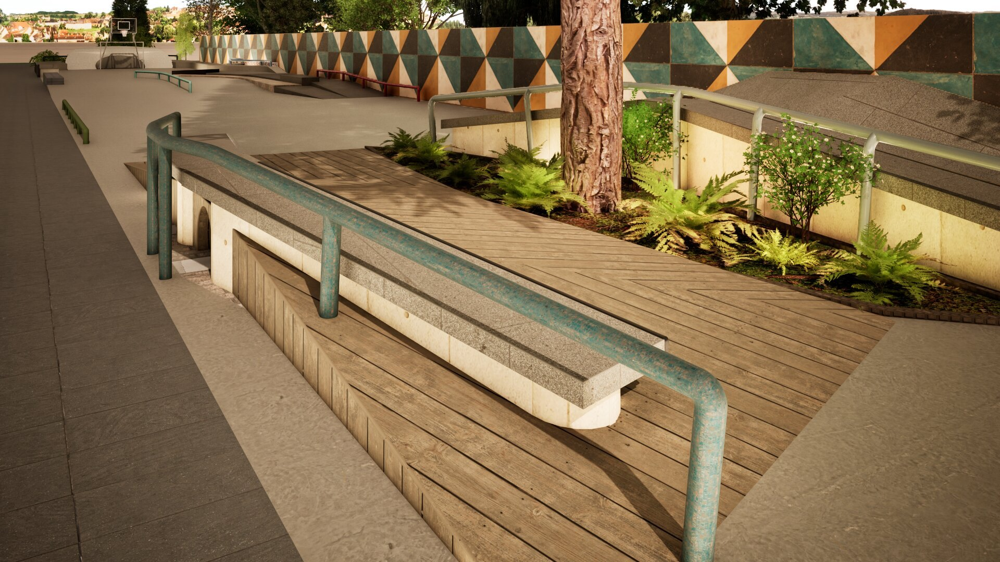
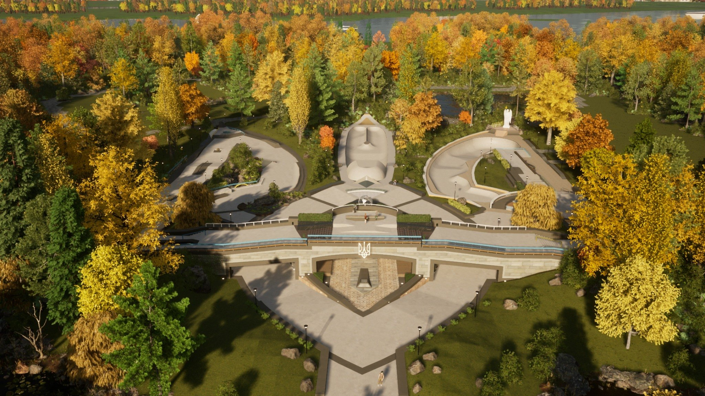

Lincoln AvenuePort Coquitlam
A public-space feel that stays approachable.
Planting, rail placement, and softer edge work help this one feel less severe and more woven into the daily life around it.
This page keeps the broader archive visible without forcing every project into the same front-page fight for space. Different locations, scales, and moods, but the same interest in public space that still understands skating, atmosphere, and how people actually use a place.
Zambia has always been stronger in the overall site read. The atmosphere, the spacing, and the way the terrain sits in the landscape are what give it weight.
Planting, rail placement, and softer edge work help this one feel less severe and more woven into the daily life around it.

This closer view does the useful work of showing whether the materials and lines can carry the idea without collapsing into decoration.

Botswana has room in it. That is part of the appeal. It lets the terrain sit in something wider than a tight obstacle composition.

The aerial angle strips the concept back to circulation, relation, and massing, which is often where the truth of a project shows up.

Belong is part concept, part visualization, part practical effort. That mix is real, and it says something honest about how these spaces come together.
The archive stays here so the main Design page can stay sharp without pretending the older work disappeared.